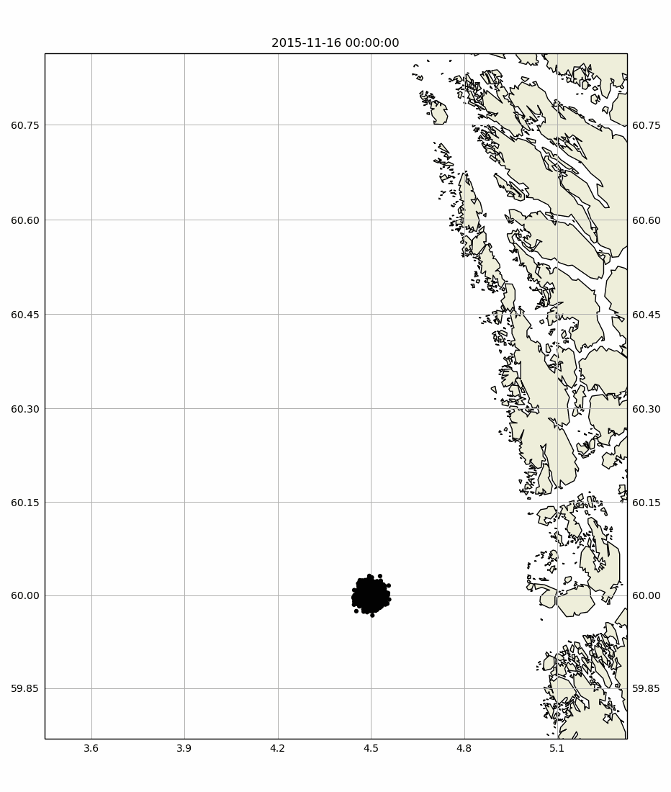

Note
Click here to download the full example code
Leeway¶
asdf
Testing some stuff1¶
Here’s the animation..
from opendrift.readers import reader_netCDF_CF_generic
from opendrift.models.leeway import Leeway
import matplotlib.pyplot as plt
lw = Leeway(loglevel=0) # Set loglevel to 0 for debug information
# Arome
#reader_arome = reader_netCDF_CF_generic.Reader('http://thredds.met.no/thredds/dodsC/meps25files/meps_det_extracted_2_5km_latest.nc')
reader_arome = reader_netCDF_CF_generic.Reader(lw.test_data_folder() +
'16Nov2015_NorKyst_z_surface/arome_subset_16Nov2015.nc')
# Norkyst
#reader_norkyst = reader_netCDF_CF_generic.Reader('http://thredds.met.no/thredds/dodsC/sea/norkyst800m/1h/aggregate_be')
reader_norkyst = reader_netCDF_CF_generic.Reader(lw.test_data_folder() +
'16Nov2015_NorKyst_z_surface/norkyst800_subset_16Nov2015.nc')
Out:
11:27:53 INFO: OpenDriftSimulation initialised (version 1.1.0rc2)
11:27:53 INFO: Opening dataset: /root/project/tests/test_data/16Nov2015_NorKyst_z_surface/arome_subset_16Nov2015.nc
11:27:53 INFO: Opening file with Dataset
11:27:53 DEBUG: Finding coordinate variables.
11:27:53 DEBUG: Parsing variable: latitude
11:27:53 DEBUG: Parsing variable: longitude
11:27:53 DEBUG: Parsing variable: projection_lambert
11:27:53 DEBUG: Parsing CF grid mapping dictionary: {'grid_mapping_name': 'lambert_conformal_conic', 'standard_parallel': array([63., 63.]), 'longitude_of_central_meridian': 15.0, 'latitude_of_projection_origin': 63.0, 'earth_radius': 6371000.0, 'proj4': '+proj=lcc +lon_0=15 +lat_0=63 +lat_1=63 +lat_2=63 +R=6.371e+06 +units=m +no_defs'}
11:27:53 INFO: Could not parse CF grid_mapping
11:27:53 DEBUG: Parsing variable: time
11:27:53 DEBUG: Parsing variable: x
11:27:53 DEBUG: Parsing variable: x_wind_10m
11:27:53 DEBUG: Parsing variable: y
11:27:53 DEBUG: Parsing variable: y_wind_10m
11:27:53 DEBUG: Setting buffer size 10 for reader /root/project/tests/test_data/16Nov2015_NorKyst_z_surface/arome_subset_16Nov2015.nc, assuming a maximum average speed of 5 m/s.
11:27:53 DEBUG: Adding new variable mappings
11:27:53 INFO: Opening dataset: /root/project/tests/test_data/16Nov2015_NorKyst_z_surface/norkyst800_subset_16Nov2015.nc
11:27:53 INFO: Opening file with Dataset
11:27:53 DEBUG: Finding coordinate variables.
11:27:53 DEBUG: Parsing variable: X
11:27:53 DEBUG: Parsing variable: Y
11:27:53 DEBUG: Parsing variable: depth
11:27:53 DEBUG: Parsing variable: projection_stere
11:27:53 DEBUG: Parsing CF grid mapping dictionary: {'grid_mapping_name': 'polar_stereographic', 'scale_factor_at_projection_origin': 0.9330127018922193, 'straight_vertical_longitude_from_pole': 70.0, 'latitude_of_projection_origin': 90.0, 'earth_radius': 6371000.0, 'proj4': '+proj=stere +lat_0=90 +lon_0=70 +lat_ts=60 +units=m +a=6.371e+06 +e=0 +no_defs'}
11:27:53 INFO: Could not parse CF grid_mapping
11:27:53 DEBUG: Parsing variable: time
11:27:53 DEBUG: Parsing variable: u
11:27:53 DEBUG: Parsing variable: v
11:27:53 DEBUG: Setting buffer size 25 for reader /root/project/tests/test_data/16Nov2015_NorKyst_z_surface/norkyst800_subset_16Nov2015.nc, assuming a maximum average speed of 5 m/s.
11:27:53 DEBUG: Adding new variable mappings
does this work?
# Adding readers succesively, and specifying which variables they
# shall provide. This way, order of adding readers does not matter,
# except for small rounding differences due to different projection
lw.add_reader(reader_norkyst,
variables=['x_sea_water_velocity', 'y_sea_water_velocity'])
lw.add_reader(reader_arome,
variables=['x_wind', 'y_wind'])
lw.fallback_values['x_sea_water_velocity'] = 0
lw.fallback_values['y_sea_water_velocity'] = 0
# Seeding some particles
lon = 4.5; lat = 60.0; # Outside Bergen
# Seed leeway elements at defined position and time
objType = 26 # 26 = Life-raft, no ballast
lw.seed_elements(lon, lat, radius=1000, number=3000,
time=reader_arome.start_time, objectType=objType)
lw.set_projection('+proj=merc')
# Running model (until end of driver data)
lw.run(steps=60, time_step=900)
lw.animation(filename='plot_leeway.gif')
plt.close('all')
Out:
generating memmap landmask from tif..
/opt/conda/envs/opendrift_docs/lib/python3.7/site-packages/cartopy/io/__init__.py:260: DownloadWarning: Downloading: https://www.ngdc.noaa.gov/mgg/shorelines/data/gshhs/oldversions/version2.2.0/GSHHS_shp_2.2.0.zip
warnings.warn('Downloading: {}'.format(url), DownloadWarning)
/root/project/opendrift/models/basemodel.py:2804: UserWarning: Tight layout not applied. The left and right margins cannot be made large enough to accommodate all axes decorations.
fig.canvas.draw()
Testing some stuff¶
Here’s the animation..
# Print and plot results
print(lw)
#lw.animation(filename='leeway.gif')
lw.plot()
Out:
===========================
--------------------
Reader performance:
--------------------
/root/project/tests/test_data/16Nov2015_NorKyst_z_surface/norkyst800_subset_16Nov2015.nc
0:00:05.5 total
0:00:00.0 preparing
0:00:00.0 reading
0:00:00.0 interpolation
0:00:00.0 interpolation_time
0:00:05.3 rotating vectors
0:00:00.0 masking
--------------------
/root/project/tests/test_data/16Nov2015_NorKyst_z_surface/arome_subset_16Nov2015.nc
0:00:05.4 total
0:00:00.0 preparing
0:00:00.0 reading
0:00:00.0 interpolation
0:00:00.0 interpolation_time
0:00:05.2 rotating vectors
0:00:00.0 masking
--------------------
global_landmask
0:00:00.5 total
0:00:00.0 preparing
0:00:00.5 reading
0:00:00.0 interpolation_time
0:00:00.0 masking
--------------------
Performance:
32.9 total time
0.0 configuration
20.1 preparing main loop
20.1 making dynamical landmask
0.0 moving elements to ocean
11.8 readers
0.5 global_landmask
0.0 postprocessing
12.7 main loop
5.5 /root/project/tests/test_data/16Nov2015_NorKyst_z_surface/norkyst800_subset_16Nov2015.nc
5.4 /root/project/tests/test_data/16Nov2015_NorKyst_z_surface/arome_subset_16Nov2015.nc
0.7 updating elements
0.0 cleaning up
--------------------
===========================
Model: Leeway (OpenDrift version 1.1.0rc2)
2992 active LeewayObj particles (8 deactivated, 0 scheduled)
Projection: +proj=merc
-------------------
Environment variables:
-----
x_sea_water_velocity
y_sea_water_velocity
1) /root/project/tests/test_data/16Nov2015_NorKyst_z_surface/norkyst800_subset_16Nov2015.nc
-----
x_wind
y_wind
1) /root/project/tests/test_data/16Nov2015_NorKyst_z_surface/arome_subset_16Nov2015.nc
-----
land_binary_mask
1) global_landmask
Time:
Start: 2015-11-16 00:00:00
Present: 2015-11-16 15:00:00
Calculation steps: 60 * 0:15:00 - total time: 15:00:00
Output steps: 16 * 1:00:00
===========================
/root/project/opendrift/models/basemodel.py:3219: UserWarning: Tight layout not applied. The left and right margins cannot be made large enough to accommodate all axes decorations.
fig.canvas.draw()
Total running time of the script: ( 1 minutes 28.698 seconds)